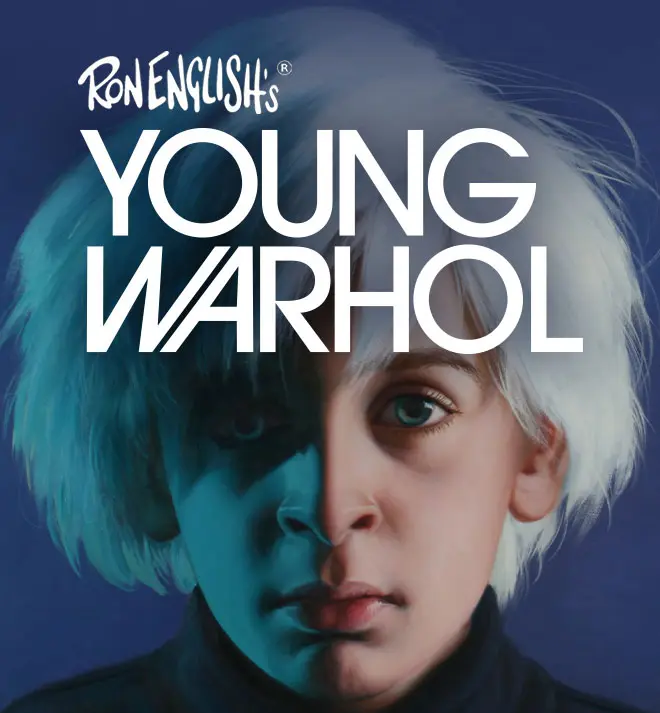

Exhibitions
Mythographic Vicissitudes, FIFTY24SF Gallery, San Francisco, California, US, January 8–29, 2009.
Literature
Ron English, Death and the Eternal Forever (Korero Press, 2014), p. 171. ISBN 978-0957664920.

Ron English, Status Factory: The Art of Ron English (San Francisco: Last Gasp of San Francisco, 2014), p. 45. ISBN 978-0867197891.

Ron English, Original Grin: The Art of Ron English (Paris: Cernunnos, 2019), p. 309. ISBN 978-2374950938.

Tamar Mitchell, “Ron English: Iconoclastic genius”, ARTDISTRICTS, vol. 1, no. 3, December, 2009 - January 2010.

Megan Wolfe, “Ron English & Alex Pardee”, Fecal Face Dot Com, no. January, 2009.


Archival document, for “Status Factory: The Art of Ron English”, Orange County Center for Contemporary Art (OCCCA), November 10 - December 17, 2010.

Provenance
Artist's personal collection.
Notes
This image later appeared on VeVe’s series page for Ron English’s Young Warhol.
Ancillary Documentation


